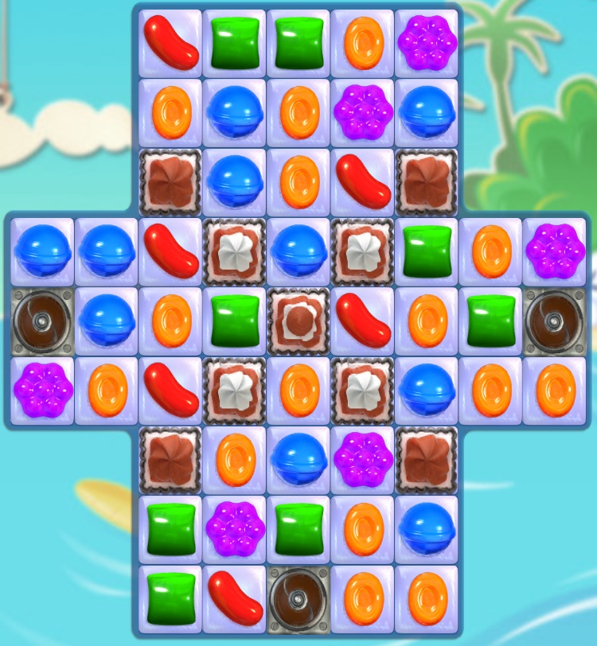
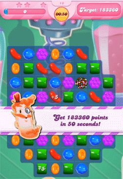
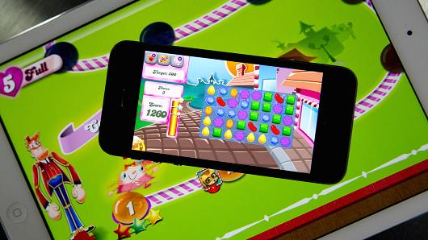
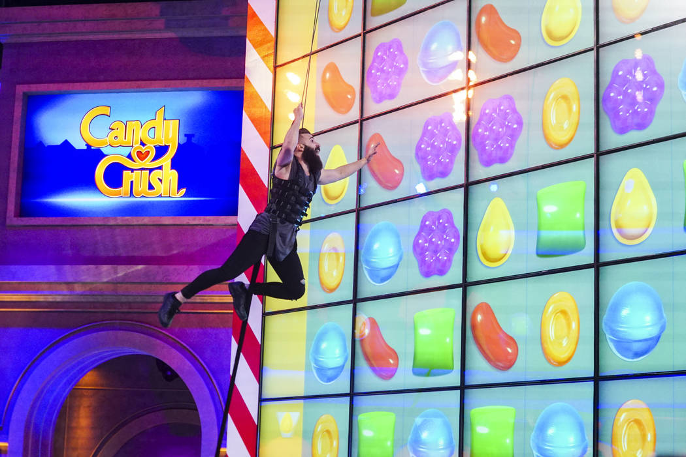
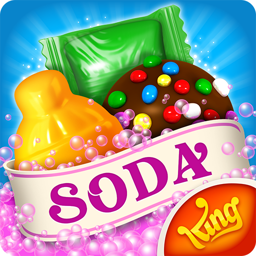
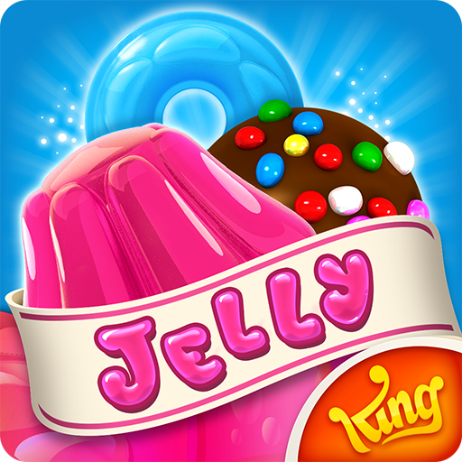
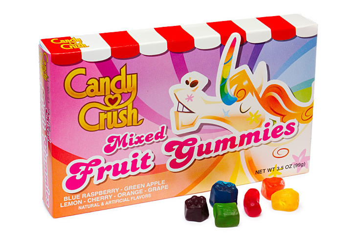

The CANDY-CRUSH Problem

Given an a by b board filled with one of six coloured candies, a number k of swaps, and a score s (# of chains of 3 identical candies deleted) to be achieved or beaten… Is there a sequence of k swaps which obtains a score of s or more?
Note: If multiple chains are formed simultaneously, then chains are deleted from the bottom of the board to the top as they appear, and the candies above immediately drop down.CANDY-CRUSH ∈ NP
In the CANDY-CRUSH Problem, a witness is the sequence of k swaps that results in a score of s or more deletions of chains. The space complexity to specify the a by b board is O(ab) bits. The space complexity to specify the k swaps is O(log(k)) bits. The space complexity to specify the score s is O(log(s)) bits. The input with the largest space complexity is the a by b board. Since we use the coordinates of the board to identify each swap (note that each square of the board has 1 coordinate), O(k∗log(a∗b)) bits are required. O(k∗log(a∗b)) is less than the square of the input, so this problem is in NP.
3SAT ≤P CANDY-CRUSH

|
||||
Will only form chains of 3 purple candies.
|
|
|
|
||
|
|
|
|
||
|
|
|
|
- Even columns have alternating rows of red and orange candies; odd columns have alternating rows of yellow and green candies as shown above.
- Gadgets composed of purple candies will be introduced into the neutral background (see "The Gadgets" section below for more information).
- The board is unbounded in width and height; only a sample of the background is shown above.
Variable Gadget: Set by the user to make a variable true or false.
{kind=link}
{kind=link}
-
- Examples of how the Variable and Connector Gadget work together:
- Example if xi is true
- purple candy appears at the Connector Gadget's output - Example if xi is false
- purple candy doesn't appear at the Connector Gadget's output - Example if
x i is true
- purple candy doesn't appear at the Connector Gadget's output - Example if
x i is false
- purple candy appears at the Connector Gadget's output
{kind=link}
{kind=link}
{kind=link}
{kind=link}
{kind=link}
{kind=link}
{kind=link}
-
- Example of how the Variable, Connector, and Wire Gadget work together
- Connector Gadget's output is the Wire Gadget's input
{kind=link}
{kind=link}
- Clause Gadget (Top Half)
- has ma copies in total - Clause Gadget (Bottom Half)
- Note: the figure shows the bottom half of the Clause Gadget for 1 clause, e.g. (xq ⋁ xr ⋁ xs)
{kind=link}
{kind=link}
{kind=link}
3SAT = {φ |φ is a satisfiable Boolean formula in 3CNF}
- To show CANDY-CRUSH is NP-hard, the paper reduces an instance of 3SAT with n variables and m clauses to an instance of the Candy Crush problem.
- Set k = n (recall k is # of swaps).
- Because of the way the infinite neutral background and gadgets are constructed, the only way to get the maximum achievable score is to set only variable gadgets such that all the clause gadgets are satisfied.
- So, deciding if we can achieve score s determines the satisfiability of the original 3SAT problem.
- The reduction is polynomial because the board created is O(n+m2) wide and O(m3(n+m2)) high.
3CNF (an “AND” of three “ORs”): (x1 ⋁ x2 ⋁ x3) ⋀ ... ⋀ (xq ⋁ xr ⋁ xs)
Qiaomei went to office hours to get our questions answered. Jiamin drew pictures on a white board to help us understand how the gadgets worked together. Emmely designed the blog and created gif files for the presentation. We all worked on the slides for our presentation together.
About Candy Crush
A player has to achieve a given score with a fixed number of swaps
A swap interchanges two neighbouring candies to create a chain of identical candies
If chains are deleted from the board, then the candies above drop down into their place
The Main Takeaway
Generalized versions of match 3 games (e.g. Bejeweled) are in NP and are NP-hard, thus they are NP-complete.People spend millions of hours solving these games, and the creators profit from them! Perhaps we can use the above fact to build more games like Candy Crush that appear easy but are actually computationally difficult to solve.
Our Evaluation
This problem uses a strict rule on columns, assuming the candies drop down vertically. However, in some levels of candy crush the candies need to move both vertically and horizontally to fill in the board due to blockers.

This problem doesn't account for all types of levels in candy crush. For example, in a timed level the player has an unconstrained # of moves

This problem includes a clever use of gadgets to solve the reduction
Why We Picked This Topic
It used a reduction to 3SAT which is something we learned about in class
It is a well known game

If You Love Candy Crush...
Have you watched any episodes of the Candy Crush TV Show on CBS?

Have you tried playing the other sagas?
 
Have you eaten Candy Crush Gummies?
